The feel
An illuminated manuscript is a handwritten book decorated with gold or silver, brilliant colours, elaborate designs or small pictures.1 The name comes from the glow of that gold and colour, and burnished leaf still sparkles as the pages turn.2 The margins joke: rabbits, thought of then as pure and helpless, turn into killers of knights,3 and small scenes poke fun at the lofty themes in the middle of the page and at human foibles.4
For game makers the old pages are a ready-made art bible. Inkulinati's art director Dorota Halicka calls anonymous medieval scribes and illuminators the team's concept artists, and found the marginalia ready to use as units, board pieces, battle types and level design.5 Pentiment's art director Hannah Kennedy wanted the game to show both the hand-painted books of its period and the woodcut printing that was taking over from them,6 with the visual language of that real art built into the style of the game itself.7 Halicka admits the hard part: making a game that looks like a manuscript and is still playable, clear and understandable.3
- gilded
- handwritten
- devout
- irreverent
- patient
- candlelit
Where it comes from
The Book of Kells, probably begun on Iona in the late 8th century, is a masterpiece of the Hiberno-Saxon style, which joined Irish spirals and elaborate initials to Anglo-Saxon interlace and bright colour.8 Romanesque artists of about 1050 to 1200 wove figures and plants through initial letters, later illustrators freed those vines into the margins, and marginal imagery reached its height in the Gothic illumination of northern Europe, from about 1200 to 1350.4 After printing spread through Europe in the second half of the 15th century, printed illustration superseded illumination.1 Games took up the look recently: Pentiment (2022), set between the medieval and early modern worlds,9 draws on both the illuminated manuscripts and the woodcuts of that time,6 and Yaza Games built Inkulinati on European manuscripts of the 11th to 14th centuries.3
Core elements
Burnished gold
Illumination first meant decorating a handwritten text with gold, or more rarely silver, so that the page looked literally lit up.1 Illuminators used gold in two forms: leaf, hammered tissue-thin and often polished to a brilliant shine, and shell gold, powdered metal mixed with glue and applied like paint.10 Burnished leaf could be tooled with punched dots, which add texture and let light play across the surface.10
Historiated initials
The opening letter holds a picture. A historiated initial contains a recognisable person or narrative scene, and an inhabited initial an unknown human or an animal.11 Romanesque artists filled initials with intertwined figures and plant forms in rhythmic compositions.4 Lombards are rounded capitals in red or blue ink, sometimes filled in with decoration.11
Creatures in the margins
Gothic margins teem with tiny characters, creatures and fantastic plants, called marginalia.4 Armed knights fighting snails are common there,12 and the Inkulinati team even found snails eating knights.3 The meaning was never fixed: as Michael Camille wrote, "marginal imagery lacks the iconographic stability of a religious narrative or icon".12
Red rubrics
Red marks the structure of the text. Rubrication means highlighting part of a text in red ink,11 and Edward Johnston called it a connecting link between plain writing and illumination proper.13 Paragraph marks and other signs can be red too, and Johnston found red more decorative in rubrics than in any other simple form of ornament.13
Ruled columns and wide margins
The page is planned before a word is written. Scribes pricked small holes along the edge of a leaf as guides for ruling,11 and the ruled lines, in leadpoint or coloured ink, were part of the design of the page.2 A wide page is split into two or more columns, and the foot margin is usually twice as wide as the head.13
Flat colour and false perspective
The Hiberno-Saxon style preferred geometric design to naturalistic representation, with flat areas of colour and complicated interlace.8 The Secret of Kells kept that rule for most of the film: a medieval world that is flat, with false perspective and lots of colour.14 Even water is stylised: most medieval water in manuscripts looks like blue hills rather than water as we picture it today.5
How to do it
Rule the page
Plan the margins first. Edward Johnston sets the inner, head, side and foot margins in the proportion 1½ : 2 : 3 : 4, close to early manuscripts, so the foot is about twice the head.13 Allow four to eight words, or 25 to 50 letter-spaces, to a line, and split a wide page into two or more columns.13 Leave the ruling visible in leadpoint grey or red ink, because it was part of the design of the page.2
Lay the gold first
Draw figures, foliage and letters lightly in lead, then make the permanent outline with a pen.15 Paint a sticky base such as bole, a refined red clay, wherever gold will go, lay the leaf and burnish it, and only then paint the colours.2 Cennini's base for gold on parchment is gesso with biacca (white lead) up to a third of the gesso and a little sugar candy, tempered with beaten egg white.15 Use two finishes: burnished leaf is as bright as a mirror in the right light and can look quite dark in another,13 while shell gold, applied like paint, gives a matt finish for highlights on drapery and hair.10
Build the colour in layers
Paint each area flat, then model it. The artist of the Renaud de Bar Pontifical covered his drawings in lead white, laid the gold leaf, painted an azurite background and drew shell gold tendrils over it, then shaded the base colours with ultramarine and organic glazes and highlighted them with lead white mixed into the main colour.16 Mix optically too: one 12th-century artist made green frames by overlapping ultramarine and orpiment, and set navy against orange-red and green beside pink.16
Add the rubrics and initials
Write the text in black, then add the red, massed at the head, side or foot of the black instead of scattered.13 Alternate red and blue capitals, adding green as a third colour, and make the large capitals one, two or more line-spaces tall.13 Put a recognisable person or scene inside the biggest initials to make them historiated.11
Fill the margins
Grow vines out of the initials into the margins, as late medieval illustrators did, and let small figures act out scenes that expand on the picture in the centre or poke fun at it.4 Inkulinati gave its beasts the actions they perform in the margins, such as pushing, praying and playing the trumpet,5 and made its snails slower because they are big beasts.3
Flatten the playfield
Keep the camera as flat as the page. To hold its flattening, Pentiment restricted movement to tracks, almost always faced the camera north, and avoided paths that walk up into a scene instead of scaling characters for distance.7 Inkulinati closed its world inside a book, which fixed the camera distance, the resolution of each element and the size of the board graphics.5
Write the text stroke by stroke
Draw 4 versions of every letter and mix them as you write, so that repeated letters vary the way handwriting does.9 Give each letter a ductus diagram showing its strokes, their order and the direction of the pen,9 and reveal text on screen one stroke at a time in that order.17 Start new text a dark, shimmering black, then let it dull and bleed a little, as if the parchment were absorbing it.17
Cheat sheet
- Margins
- Inner 1½, head 2, side 3, foot 413
- Line length
- 4 to 8 words, 25 to 50 letter-spaces13
- Large capitals
- 1, 2 or more line-spaces tall13
- Pigments
- Ultramarine, vermilion, verdigris, orpiment, lead white, carbon black16
- Gold
- Leaf polished to a shine, shell gold for matt10
- Gilding base
- Gesso, up to a third white lead, egg white15
- Figures
- Three-quarter view, never from behind6
Do
- Work from digitised originals. Halicka chose Inkulinati's main references by browsing digitised manuscripts online.3
- Copy real pages by hand until you know the rules. Halicka drew many sketches in ink and digitally to learn the style.3
- Write small notes in red in the margins. Lighter than black, red writing reads there as decoration and leaves the regular look of the page alone.13
- Repeat every colour you use as often as you reasonably can, and where chances for colour are few, limit yourself to two colours or even one.13
- Take game signs from the manuscripts. Inkulinati marks a field that heals with a cloud and a hand, where another game would use a first aid kit.5
Avoid
- Scattering red capitals through a page. They lose their effect and look brown-red instead of bright red.13
- Gold raised too high. Johnston found heavily raised burnished gold looks out of place on a page and heavy.13
- Status icons too small to notice. Inkulinati first marked a heretic with a small symbol next to its name, and nobody saw it until it became a dark halo.5
- Modern shorthand, such as a red label reading TNT. Inkulinati's exploding beasts are bloated instead, in the spirit of the marginalia.5
- Heavy red rule lines. Johnston advised using rules sparingly, in black rather than red, and ruling any red lines between lines of writing feint, in diluted colour.13
Tools and tutorials
- Writing & Illuminating, & Lettering (Edward Johnston, 1906)
Margins, ruling, rubrics, and laying and burnishing gold, step by step. Free to read online.
- The Book of the Art of Cennino Cennini
Chapters 157 to 161 cover miniature painting, gold on parchment and colours for parchment.15
- COLOUR: The Art & Science of Illuminated Manuscripts
The Fitzwilliam Museum's pages on real manuscripts, naming the pigments and the order they were painted in.16
- Discarding Images
Medieval pictures collected by the medievalist Łukasz Kozak, whom the Inkulinati team consulted.3,5
- Lettermatic: Pentiment
How the game's scripts were drawn by hand, with letter alternates and ductus diagrams.9
Palette
Vellum comes from Inkulinati's key art, gold and ultramarine from the January page of the Très Riches Heures, vermilion and verdigris from the Gorleston Psalter's fox and goose, ink from the script of the Luttrell Psalter, and pink from a sail in Pentiment.
Feel the vibe
Listen
Play it while you rule a page and letter the first lines.
YouTubeA cheerful song for drawing rabbits with swords and knights fleeing snails.
YouTubeSlow and bright, for long sittings over spirals and knotwork.
YouTubeOne voice over a drone, for laying in gold and colour without hurry.
YouTubeDrums and voices for sketching a crowded margin of musicians and dancers.
YouTube
More references
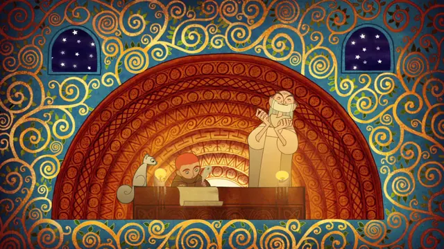
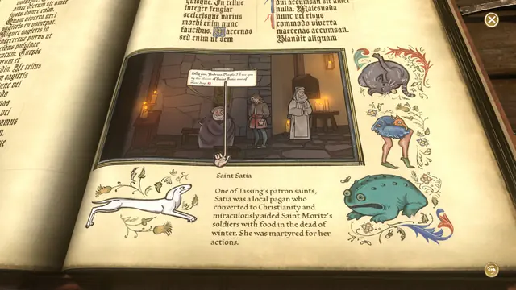
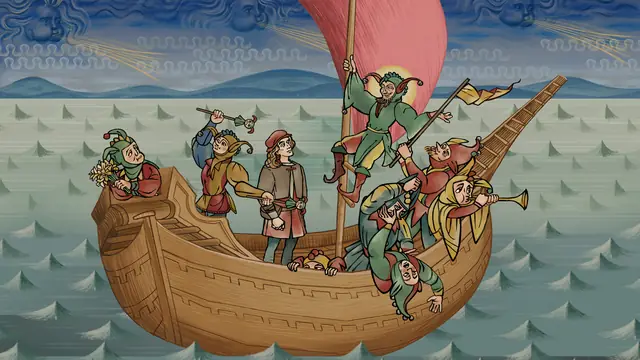
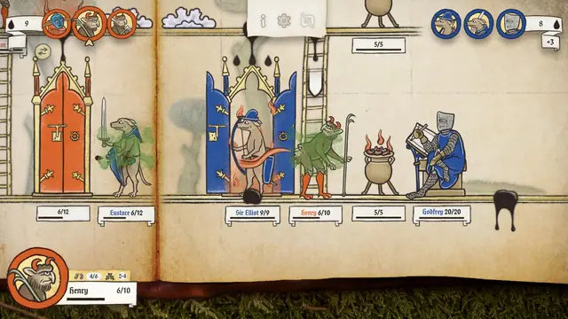
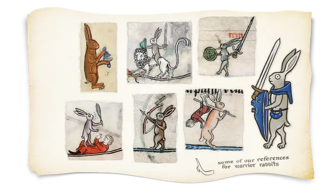
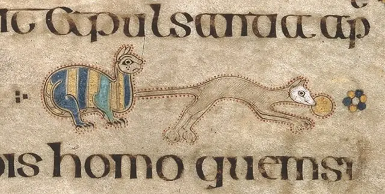
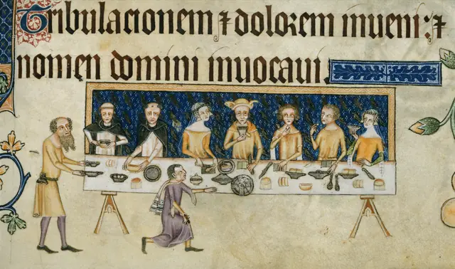
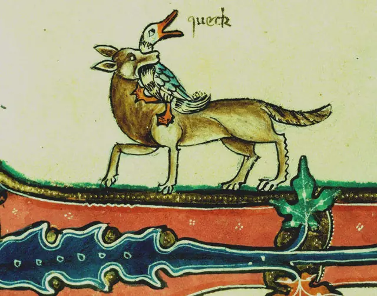
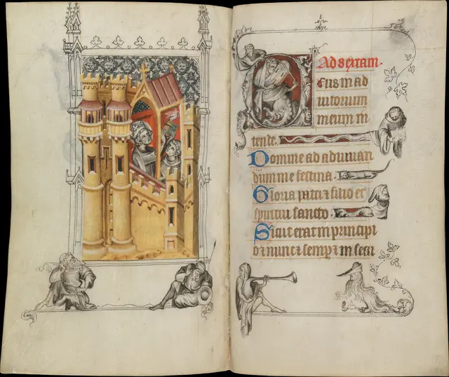
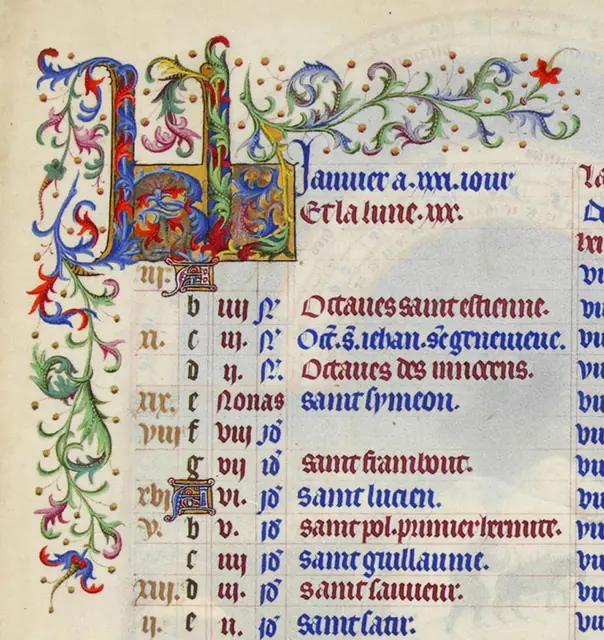
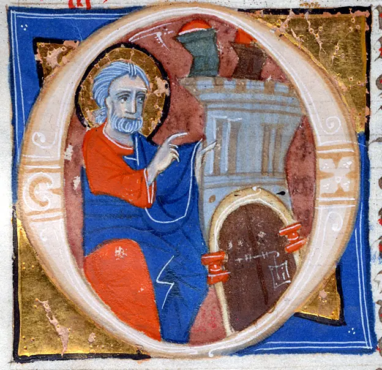
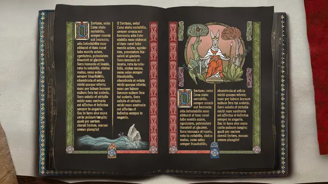
Games
- Pentiment
Study the flat staging, with movement on tracks and figures in front or three-quarter view,7 and the hands: monks write blackletter, printers speak in type and peasants in a peasant script.17
- Inkulinati
Study how marginalia become rules: units and level pieces taken from the margins, water drawn as blue hills, menus as pages and buttons picked out in gilding.5
- Scriptorium: Master of Manuscripts
A manuscript workshop sim from Yaza Games, the studio behind Inkulinati.18,5 Pages are composed from a library of over 1000 images inspired by real medieval manuscripts, and text is set in medieval fonts with ornate capitals.18
- Marginalia Hero
A one-tap arcade RPG for phones. Its developer redrew the fighters from illuminated manuscripts as vector art,19 then drew the interface, icons and equipment himself.19 Study how the fighters stand on vine scrolls and how the menus are framed like a decorated page.
Film, art and more
- Book of Kells
Study the interlace, the elaborate initials and the flat areas of colour of the Hiberno-Saxon style.8
- Gorleston Psalter
Knights battle snails in its margins, and in one an armed monkey takes the knight's place.12
- Très Riches Heures du duc de Berry
The Limbourg brothers' landmark of book illumination,20 with calendar pictures of each month's work for nobles and peasants.21
- The Secret of Kells
Cartoon Saloon's film inspired by the Book of Kells. Its characters were flattened towards medieval icons, with thicker outer lines for a stained-glass effect.14
Sources
- 1Illuminated manuscript
- 2The Making of a Medieval Book
- 3Playing with History – Illuminating the insane game world of Inkulinati
- 4Out of Bounds: Images in the Margins of Medieval Manuscripts
- 5Thrills and quills: The ink-based combat and magical manuscripts of Inkulinati
- 6The history behind Pentiment and the creation of its artistic style
- 7Deep Dive: Behind the evocative medieval manuscript art of Pentiment
- 8Book of Kells
- 9Custom fonts for Pentiment
- 10Painting in Gold and Silver
- 11Medieval books: glossary
- 12Knight v Snail
- 13Writing & Illuminating, & Lettering
- 14Moore Illuminates 'The Secret of Kells'
- 15The Book of the Art of Cennino Cennini
- 16The Illuminators' Palette
- 17How Pentiment's hand-crafted fonts give pen and ink a voice
- 18Become a Medieval Artist in This Newly Released Illustration Sandbox
- 19Marginalia hero: medieval one tap game
- 20Limbourg brothers
- 21Western painting: International Gothic